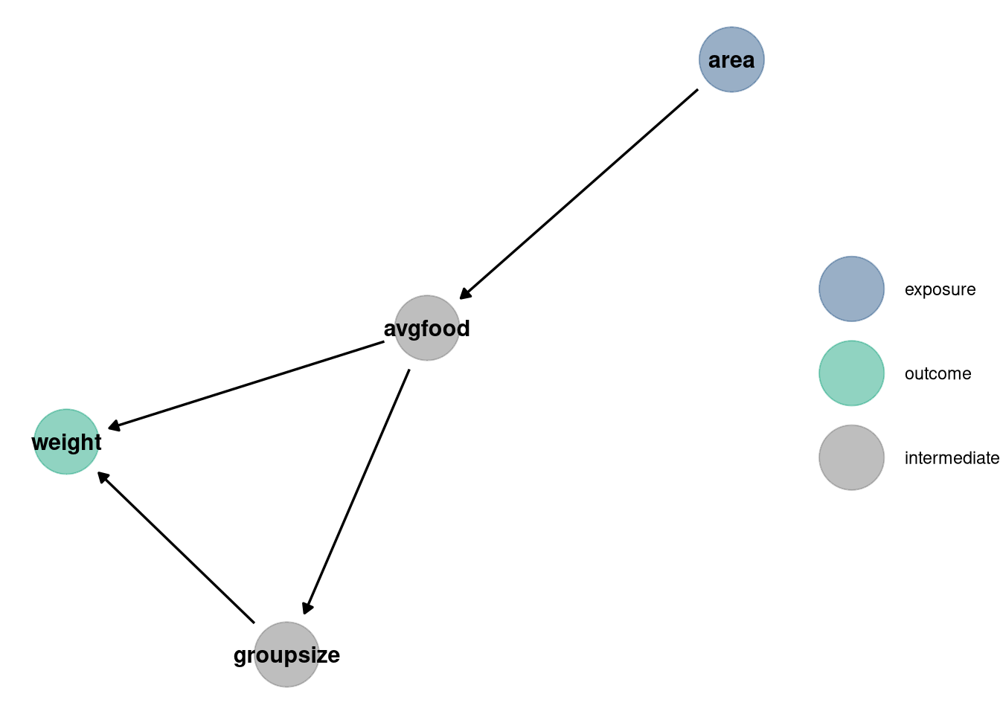
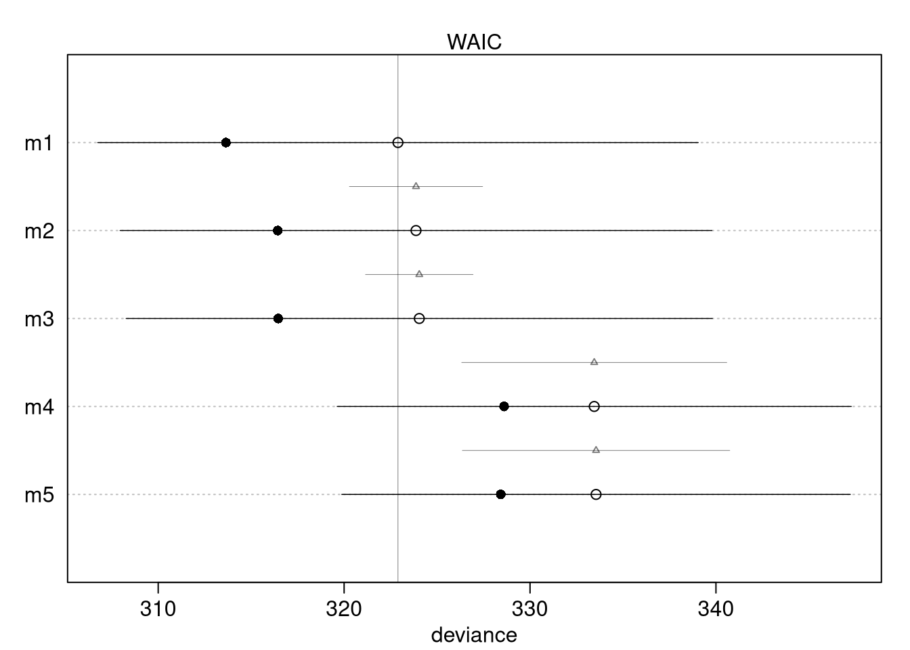

5 Homework: Week 4
2021-08-30 [updated: 2021-09-08]
5.0.1 Setup
# Packages
library(ggdag)
library(dagitty)
library(data.table)
library(ggplot2)
library(tidybayes)
# Functions
dag_plot <- function(dag) {
stat <- node_status(dag, FALSE)
stat$data$status[is.na(stat$data$status)] <- 'intermediate'
ggplot(stat, aes(x = x, y = y, xend = xend, yend = yend)) +
geom_dag_point(aes(color = status), alpha = 0.5, size = 15) +
geom_dag_edges() +
labs(color = '') +
geom_dag_text(color = 'black') +
scale_color_manual(values = list('exposure' = '#35608DFF',
'outcome' = '#22A884FF',
'intermediate' = 'grey50')) +
theme_void()
}5.1 Question 1
Consider three fictional Polynesian islands. On each there is a Royal Ornithologist charged by the king with surveying the birb population. They have each found the following proportions of 5 important birb species:
# Data
birds <- matrix(
c(0.2, 0.2, 0.2, 0.2, 0.2,
0.8, 0.1, 0.05, 0.025, 0.025,
0.05, 0.15, 0.7, 0.05, 0.05),
nrow = 3, ncol = 5, byrow = TRUE
)
dimnames(birds) <- list(as.character(1:3), LETTERS[1:5])
birds## A B C D E
## 1 0.20 0.20 0.20 0.200 0.200
## 2 0.80 0.10 0.05 0.025 0.025
## 3 0.05 0.15 0.70 0.050 0.050First, compute the entropy of each island’s birb distribution. Interpret these entropy values
DT <- melt(data.table(birds, keep.rownames = 'island'), id.vars = 'island',
variable.name = 'id', value.name = 'proportion')
# Entropy
entropy <- function(p) -sum(p * log(p))
DT[, .(entropy = entropy(proportion)), by = island]## island entropy
## <char> <num>
## 1: 1 1.61
## 2: 2 0.74
## 3: 3 0.98The information entropy describes the uncertainty in a distribution of probabilities given the average log-probability of an event (from Statistical Rethinking 7.2). Island 1 has the highest entropy, with the flat probability of 0.2 across 5 bird species. Island 2 has the lowest entropy, including species A with the highest overall proportion 0.8.
Second, use each island’s birb distribution to predict the other two. This means to compute the K-L Divergence of each island from the others, treating each island as if it were a statistical model of the other islands. You should end up with 6 different K-L Divergence values. Which island predicts the others best? Why?
divergence <- function(p, q) sum(p * (log(p) - log(q)))
z <- CJ(p = DT$island, q = DT$island, unique = TRUE)[, row_id := .I]
z[, div := divergence(DT[island == p, proportion],
DT[island == q, proportion]),
by = row_id]
z[p != q]## p q row_id div
## <char> <char> <int> <num>
## 1: 1 2 2 0.97
## 2: 1 3 3 0.64
## 3: 2 1 4 0.87
## 4: 2 3 6 2.01
## 5: 3 1 7 0.63
## 6: 3 2 8 1.84divergence(p, q) = “Average difference in log probability between the target (p) and the model (q)”.
Model 1 predicts target 3 best (lowest divergence at 0.63) and target 2 best (lowest divergence at 0.87) because it has the highest entropy. Model 3 predicts target 1 best (lowest divergence at 0.64) because it has higher entropy than model 2.
5.2 Question 2
Recall the marriage, age, and happiness collider bias example from Chapter 6. Run models m6.9 and m6.10 again.
5.2.1 DAG
dag <- dagify(
marriage ~ happiness,
marriage ~ age,
exposure = 'age',
outcome = 'happiness'
)
dag_plot(dag)
5.2.2 Data
library(rethinking)
d <- sim_happiness(seed = 1977, N_years = 1e3)
d2 <- d[d$age > 17,]
d2$A <- (d2$age - 18) / (65 - 18)
d2$mid <- d2$married + 1
precis(d2)## mean sd 5.5% 94.5% histogram
## age 41.5000000000000000 13.86 20.000 63.00 ▃▇▇▇▇▇▇▇▇▇
## married 0.4072916666666667 0.49 0.000 1.00 ▇▁▁▁▁▁▁▁▁▅
## happiness -0.0000000000000001 1.21 -1.789 1.79 ▇▅▇▅▅▇▅▇
## A 0.5000000000000000 0.29 0.043 0.96 ▇▇▇▅▇▇▅▇▇▇
## mid 1.4072916666666666 0.49 1.000 2.00 ▇▁▁▁▁▁▁▁▁▅5.2.3 Models
m6.9 <- quap(
alist(
happiness ~ dnorm(mu, sigma),
mu <- a[mid] + bA * A,
a[mid] ~ dnorm(0, 1),
bA ~ dnorm(0, 2),
sigma ~ dexp(1)
), data = d2
)
precis(m6.9, depth = 2)## mean sd 5.5% 94.5%
## a[1] -0.24 0.063 -0.34 -0.13
## a[2] 1.26 0.085 1.12 1.39
## bA -0.75 0.113 -0.93 -0.57
## sigma 0.99 0.023 0.95 1.03m6.10 <- quap(
alist(
happiness ~ dnorm(mu, sigma),
mu <- a + bA * A,
a ~ dnorm(0, 1),
bA ~ dnorm(0, 2),
sigma ~ dexp(1)
), data = d2
)
precis(m6.10, depth = 2)## mean sd 5.5% 94.5%
## a 0.00000016 0.077 -0.12 0.12
## bA -0.00000027 0.132 -0.21 0.21
## sigma 1.21318761 0.028 1.17 1.265.2.4 Interpretation
Compare these two models using WAIC (or LOO, they will produce identical results). Which model is expected to make better predictions? Which model provides the correct causal inference about the influence of age on happiness? Can you explain why the answers to these two questions disagree?
compare(m6.9, m6.10)## WAIC SE dWAIC dSE pWAIC weight
## m6.9 2714 38 0 NA 3.7 1
## m6.10 3102 28 388 35 2.3 0Model m6.9 includes marriage while m6.10 does not. The causal influence of age on happiness is confounded by marriage because marriage is a collider between age and happiness. Conditioning on marriage opens the path between age and happiness, making age and happiness independent. Therefore, despite the WAIC for m6.9 being lower, it does not tell us anything about causation between the variables.
5.3 Question 3
Reconsider the urban fox analysis from last week’s homework. Use WAIC or LOO based model comparison on five different models, each using weight as the outcome, and containing these sets of predictor variables:
- avgfood + groupsize + area
- avgfood + groupsize
- groupsize + area
- avgfood
- area
5.3.1 Data
library(rethinking)
data(foxes)5.3.2 Models
foxes$scale_area <- scale(foxes$area)
foxes$scale_weight <- scale(foxes$weight)
foxes$scale_avgfood <- scale(foxes$avgfood)
foxes$scale_groupsize <- scale(foxes$groupsize)
m1 <- quap(
alist(
scale_weight ~ dnorm(mu, sigma),
mu <- a + bFood * scale_avgfood + bGroup * scale_groupsize + bArea * scale_area,
a ~ dnorm(0, 0.2),
bFood ~ dnorm(0, 0.5),
bGroup ~ dnorm(0, 0.5),
bArea ~ dnorm(0, 0.5),
sigma ~ dunif(0, 50)
),
data = foxes
)
m2 <- quap(
alist(
scale_weight ~ dnorm(mu, sigma),
mu <- a + bFood * scale_avgfood + bGroup * scale_groupsize,
a ~ dnorm(0, 0.2),
bFood ~ dnorm(0, 0.5),
bGroup ~ dnorm(0, 0.5),
sigma ~ dunif(0, 50)
),
data = foxes
)
m3 <- quap(
alist(
scale_weight ~ dnorm(mu, sigma),
mu <- a + bGroup * scale_groupsize + bArea * scale_area,
a ~ dnorm(0, 0.2),
bArea ~ dnorm(0, 0.5),
bGroup ~ dnorm(0, 0.5),
sigma ~ dunif(0, 50)
),
data = foxes
)
m4 <- quap(
alist(
scale_weight ~ dnorm(mu, sigma),
mu <- a + bFood * scale_avgfood,
a ~ dnorm(0, 0.2),
bFood ~ dnorm(0, 0.5),
sigma ~ dunif(0, 50)
),
data = foxes
)
m5 <- quap(
alist(
scale_weight ~ dnorm(mu, sigma),
mu <- a + bArea * scale_area,
a ~ dnorm(0, 0.2),
bArea ~ dnorm(0, 0.5),
sigma ~ dunif(0, 50)
),
data = foxes
)5.3.3 DAG
dag <- dagify(
weight ~ groupsize + avgfood,
groupsize ~ avgfood,
avgfood ~ area,
exposure = 'area',
outcome = 'weight'
)
dag_plot(dag)
5.3.4 Interpretation
Can you explain the relative differences in WAIC scores, using the fox DAG from last week’s homework? Be sure to pay attention to the standard error of the score differences (dSE).
- weight ~ avgfood + groupsize + area
- weight ~ avgfood + groupsize
- weight ~ groupsize + area
- weight ~ avgfood
- weight ~ area
compare_models <- compare(m1, m2, m3, m4, m5)
compare_models## WAIC SE dWAIC dSE pWAIC weight
## m1 323 16 0.00 NA 4.6 0.4568
## m2 324 16 0.97 3.6 3.7 0.2811
## m3 324 16 1.15 2.9 3.8 0.2575
## m4 333 14 10.56 7.1 2.4 0.0023
## m5 334 14 10.66 7.2 2.6 0.0022compare_models@dSE## m1 m2 m3 m4 m5
## m1 NA 3.6 2.9 7.13 7.19
## m2 3.6 NA 5.8 6.55 6.79
## m3 2.9 5.8 NA 6.54 6.59
## m4 7.1 6.5 6.5 NA 0.84
## m5 7.2 6.8 6.6 0.84 NA# Filled points: in-sample deviance
# Open points: WAIC
# Dark lines: standard error of WAIC
# Light lines with triangles: standard error of difference in WAIC between each model and top model
plot(compare_models)
coeftab(m1, m2, m3, m4, m5)## m1 m2 m3 m4 m5
## a 0 0 0 0 0
## bFood 0.30 0.48 NA -0.02 NA
## bGroup -0.64 -0.57 -0.48 NA NA
## bArea 0.28 NA 0.41 NA 0.02
## sigma 0.93 0.95 0.95 1.00 1.00
## nobs 116 116 116 116 116Weight is the outcome in all of the models. Looking at the DAG, we see a potential back door into avgfood and group size, but no colliders. Avgfood is a path between area and weight, as is groupsize between avgfood and weight. The paths for each variable that does not have confounds shown in the DAG:
Model 2: Weight ~ groupsize + avgfood (to determine causal effect of groupsize on weight, including avgfood to open the collider)
Model 4: Weight ~ avgfood (to determine causal effect of avgfood, without groupsize confusing the relationship since it’s a pipe)
Model 5: Weight ~ area (with avgfood and groupsize excluded)
Model 1 includes the most parameters and, as expected, has the highest model
fit. The dSE column returned by the compare function indicates the standard
error of the difference between models, with the @dSE slot showing this for
all combinations of models. Models 4 and 5 barely differ, as there is likely a
strong influence of area on average food. Including both area and avgfood is
like conditioning on the intermediate treatment effect. Models 4 and 5 are most
different from models 1, 2, 3. Models 1, 2, and 3 all have groupsize and the
WAIC and coeftab, as well as the DAG, indicate the models have the same
inference.